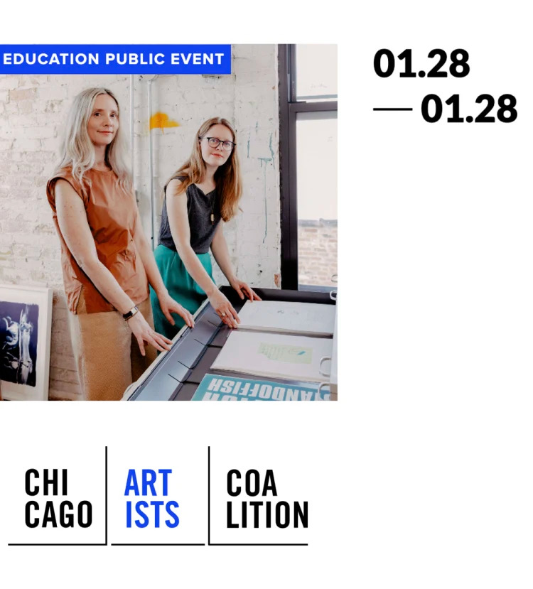

Artists & Prints: From Studio to Press to Market
Process/Process is pleased to lead a workshop as part of the Chicago Artists Coalition’s Professional Development series.
Artists & Prints: From Studio to Press to Market
Wednesday, January 28, 6-8PM
A primer on the possibilities of print-based artworks, in this session “Artists & Prints: From Studio to Press to Market,” the workshop introduces participants to common models and resources for the production and dissemination of original limited edition prints by working artists. Angee Lennard and Jessica Cochran will use historical and contemporary examples, including from works from their own output as publishers.
Then, they will discuss the role that prints can play in the broader framework of an artists’ practice, both in the context of an artist’s market, but also the more critical contexts of one’s oeuvre. Here they will cite artists working locally and beyond. Finally, there will be plenty of opportunities for questions and answers. This workshop is designed for all artists, regardless of their experience with printmaking or current access to a printshop.
Registration Information
Participants may attend in person or online via Zoom. Registration is required. $10 for the general public $5 for CAC alumni
Register here: https://secure.lglforms.com/form_engine/s/kfs8Vpa5lBHIJBqMfZVZHg